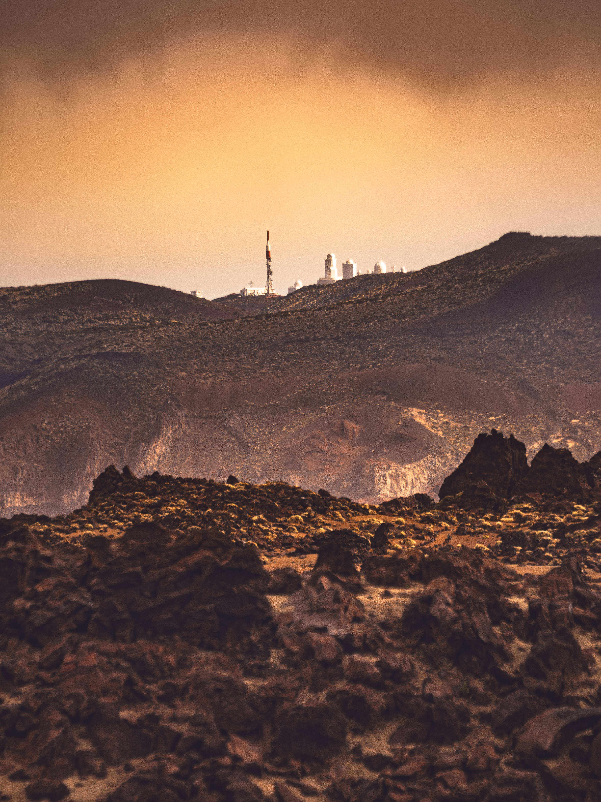
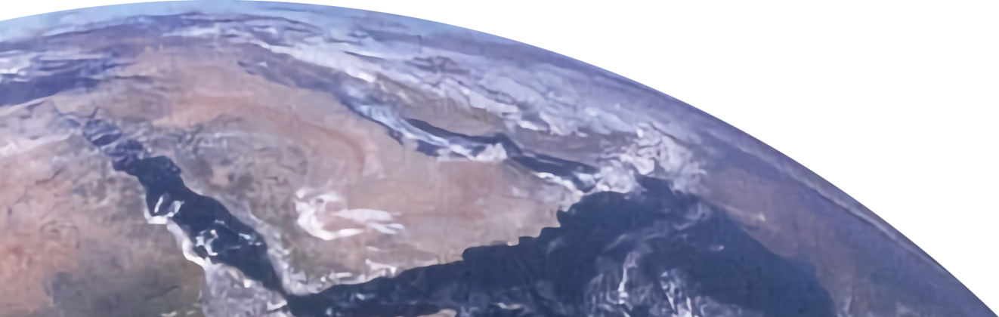
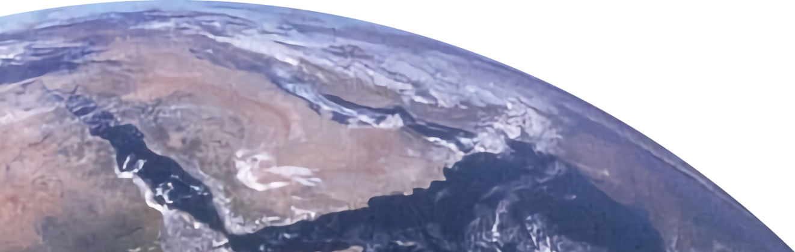

About Mars

[Source: Nasa] Despite the fact that Mars may once have been warm and wet, it is now a cold, dry, barren place with average temperatures of -81°F. The atmosphere is thin and mainly carbon dioxide. Ultraviolet and other forms of intense radiation bathe the surface, because Mars has a thin atmosphere and no active magnetic field to protect it.
Interesting Facts about Mars:
- Mars is about 4.5 Million years old
- Although the lenght of an Earth day and a Mars day is quite similar, a Mars year is almost twice as long as a year on earth
- Mars has two moons: Phobos and Deimos
- You will experience 62,5% less gravity than on earth
- One earth mile equals 2 Mars miles (mmi), due to Mars being roughly half the size of the earth
Mars and Earth in Comparison
[Source: Nasa] Geologically, Mars and Earth share a lot of common traits, and they are both known as terrestrial (or rocky) planets. The majority of the rocks at the surface of both planets are of the igneous variety, known as basalt (although on Earth most of this makes up the ocean floor). The layers that make up both planets are also similar: Like Earth, Mars has an atmosphere, crust, mantle, and a core. The rocky layers are similar in composition. In fact, all of the rocks and all of the minerals identified on Mars to date are also found on Earth. Like Earth, Mars has four seasons and weather. Mars has two moons, Phobos and Deimos. Of course, there are a lot of ways that the two planets are different too. Mars is smaller, has no active plate tectonics and no currently active global magnetic field. Liquid water is generally not stable on Mars, so there currently are no standing bodies of water (rivers, lakes or seas) and the atmosphere is very thin and composed mostly of carbon dioxide. Mars has more craters still scarring its surface than Earth (where, because of plate tectonics and weathering, lots of the surface is changed over time).
Arrival and landing procedure
In time before reaching the proximity of Mars the crew will announce the soon arrival. You will then have time to prepare yourself for the landing procedure. Go into your cabin, sit down in the seating area and fasten your seatbelts. Remain calm and watch out for further announcements or instructions. The crew will handle the landing procedure entirely. Once arrived, there will be shuttles waiting near the landing area. Other shuttles will load your luggage and together they will bring you and your belongings to the colony. During the trip you will have an amazing view on Mars' landscape. Upon reaching the colony, you will be guided to the main complex. There you will be briefed and then individually guided to your module. From then on you will be a Martian!
 
